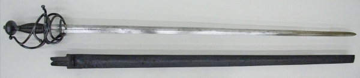

The rapier is a historical sword that was popular in the 16th and 17th centuries primarily as a civilian dueling and self-defense weapon. It's a favorite among historical combat enthusiasts and anyone who enjoys a good sword fight.

Image Credit: Metropolitan Museum of Art